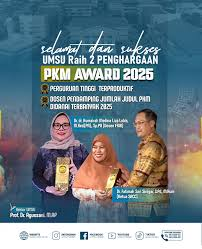
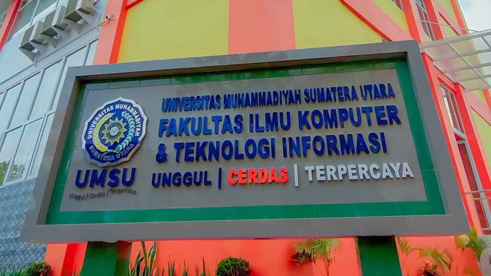
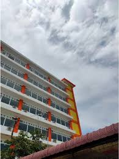
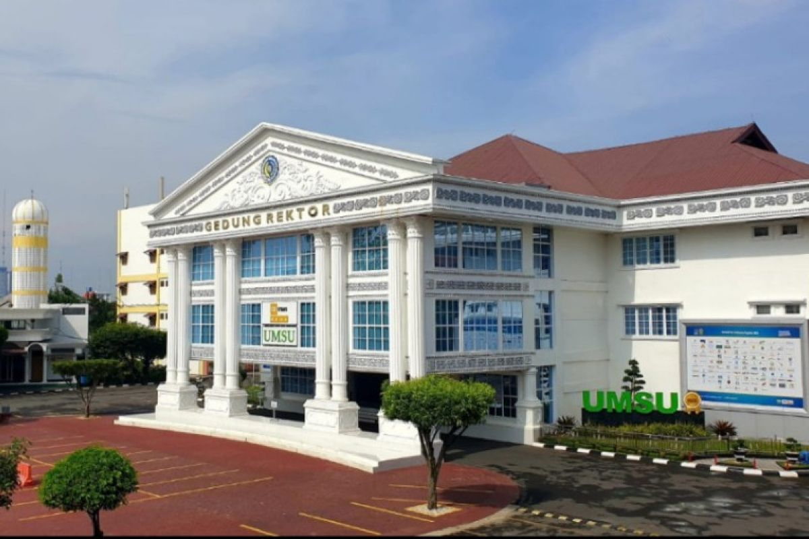

Program Pendidikan
UMSU menawarkan berbagai jenjang pendidikan berkualitas.
Berita Terbaru
Update kegiatan dan prestasi UMSU.

UMSU Raih Dua Penghargaan PKM Award 2025
Universitas Muhammadiyah Sumatera Utara meraih dua prestasi membanggakan di ajang PKM Award 2025.
Baca Selengkapnya →
Mahasiswa FIKTI UMSU Melaju ke PIMNAS 38
Satu tim mahasiswa Fakultas Ilmu Komputer dan Teknologi Informasi (FIKTI) UMSU dinyatakan lolos ke Pekan Ilmiah Mahasiswa Nasional (PIMNAS) ke‑38 di Universitas Hasanuddin, Makassar.
Baca Selengkapnya →
Fatek UMSU Serahkan Mesin Sangrai Kopi Berbasis IoT
Fakultas Teknik UMSU menyerahkan mesin sangrai kopi berbasis IoT kepada mitra dalam Program Kemitraan Masyarakat (PKM).
Baca Selengkapnya →
FH UMSU dan Kanwil Kemenham Sumut Perkuat Kapasitas HAM Komunitas
FH UMSU bekerja sama dengan Kanwil Kemenham Sumut untuk memperkuat kapasitas komunitas di Medan dalam bidang HAM.
Baca Selengkapnya →Luar Biasa! UMSU Peringkat Pertama Universitas Islam Terbaik Dunia Versi UniRank 2025
Universitas Muhammadiyah Sumatera Utara (UMSU) berhasil meraih peringkat pertama sebagai universitas Islam terbaik di dunia menurut UniRank 2025, mengungguli 435 universitas Islam dari berbagai negara.
Baca Selengkapnya →
Sambutan Rektor
Prof. Dr. Agussani, M.A.P.
UMSU terus berkomitmen meningkatan kualitas pendidikan, reputasi akademik internasional, dan pengabdian masyarakat.